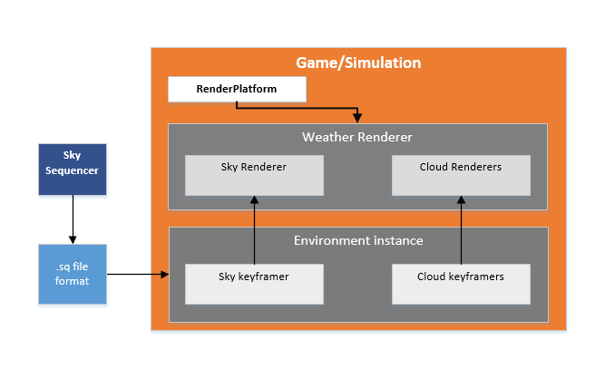

Native Development with the trueSKY SDK¶
Using the Samples¶
To build the samples, use CMake to configure and generate the project files, then open the ‘Simul.sln’ located in the root of the CMake output directory.
Integrating the SDK¶
The main elements needed to implement trueSKY in a project are: an Environment object, which will encapsulate sky and cloud data; a WeatherRenderer; and a RenderPlatform.
Platform¶
For all rendering, trueSKY uses Platform, an open source cross-platform rendering API and library which works as a wrapper around low-level graphics API’s. Platform is developed by Simul, and released under the MIT licence.
Implementing¶
Include paths: add the parent of the “Simul” source directory, and the parent of “Platform” as include paths.
Create a persistent instance of Environment.
#include "Simul/Clouds/Environment.h"
simul::clouds::Environment* environment = NULL;
...
environment=new simul::clouds::Environment();
The Environment instance calculates and updates environment data: cloud layers, sky properties and time-of-day. Create a persistent RenderPlatform, whose class depends on the graphics API. For example, for Direct3D 11, use:
#include "Platform/DirectX11/RenderPlatform.h"
platform::dx11::RenderPlatform renderPlatformD3D11 = new platform::dx11::RenderPlatform();
Note: earlier versions of Platform used “simul” as the root namespace. From v1.0, it uses “platform”.
Set up shader and texture file paths:
renderPlatform->PushShaderPath("my_shader_path");
renderPlatform->PushTexturePath("my_texture_path");
renderPlatform->PushShaderBinaryPath("my_binary_path");
These paths operate as stacks, multiple paths can be pushed to each stack.
Create a weather renderer:
simul::clouds::WeatherRenderer *weatherRenderer=new simul::clouds::WeatherRenderer(environment, NULL);
Initialize the RenderPlatform instance. In the case of Direct3D 11, pass the ID3D11Device pointer:
ID3D11Device* pd3dDevice;
...
renderPlatformDx11.RestoreDeviceObjects(pd3dDevice);
Now the WeatherRenderer can be initialized:
weatherRenderer->RestoreDeviceObjects(renderPlatformDx11);
When the application is running, update the environment usually once per frame:
environment->update();
Then to render:
void Render(ID3D11DeviceContext* pContext)
{
simul::crossplatform::GraphicsDeviceContext deviceContext;
deviceContext.platform_context =pContext;
deviceContext.renderPlatform =&renderPlatformDx11;
deviceContext.viewStruct.view_id =view_id;
deviceContext.viewStruct.depthTextureStyle =crossplatform::PROJECTION;
deviceContext.viewStruct.view =viewMatrix;
deviceContext.viewStruct.proj =projectionMatrix;
...
}
A devicecontext object is initialized once per frame, and encapsulates the platform-specific context - in this case an ID3D11DeviceContext pointer - and view-specific information: the view and projection matrices for example.
There are different types of projection matrix, and some are better than others. The classic projection transforms a viewspace position into a clip position and depth value, where depth=0 is the near plane and depth=1 is the far. But this forward projection has a very inefficient distribution of depth values with respect to distance, and causes a loss of precision. Superior to this is the reverse projection, where depth=0 represents the far plane, and depth=1 the near. It’s strongly recommended to use reverse projection to get the best visual results from trueSKY. The projection matrix sent to trueSKY should be the same one that was used to create the depth buffer.
Each view that is drawn simultaneously per frame should have a unique view_id.
The depth texture style is given so that trueSKY knows how to interpret the depth information you pass to it. The matrices simul::math::matrix4x4 are row-major view and projection matrices stored as a simple block of 16 floats - you can cast from most standard matrix classes directly.
Once per frame, before rendering, call PreRenderUpdate. This function ignores view-specific data, and updates the shared resources of the WeatherRenderer.
weatherRenderer->PreRenderUpdate(deviceContext,real_time_s);
The parameter real_time_s is real time in seconds - as distinct from simulation time, which might be greatly accelerated, or change instantly, real time is used mainly for effects like rain that might not need to appear accelerated.
In order to advance the time of day within a scene, the time of the SkyKeyframer needs to be set.
environment->skyKeyframer->SetTime(t);
For each view, we render the sky, passing an appropriate device context.
weatherRenderer->Render(deviceContext
,deviceContext.viewStruct
,renderMode
,exposure
,gamma
,mainDepthTexture
,cubemapTexture
,&depthViewport
,viewports
,cubemap_ground_colour
,amortization);
The viewstruct can be taken directly from the deviceContext for simplicity.
The exposure is a brightness multiplier - 1.0 is a good value, but the chosen number depends on how bright you want the sky to be relative to your scene. There is also gamma correction.
The cubemapTexture can be used by the precipitation as a way of simulating refraction in individual rain droplets, as well as helping to generate ambient lighting. This can be generated using the simul::clouds::Skylight class.
The depth texture is used to ensure correct atmospherics and cloud rendering. The depthViewport specifies what area of the texture is being used for the current view (some engines store a larger texture and use a portion of it): pass nullptr here to use the entire texture. See also Mixed Resolution Rendering.
Platform considerations¶
DirectX 12¶
To add True Sky to a DirectX 12 project, you need to link with the Simul core libraries, with the Platform Direct3D 12 library, e.g. SimulDirectX12_MT, and with DirectXTex, a Microsoft library for loading textures.
In the project properties, select Configuration:All, then under “Configuration Properties, C++, General” add the following to “Additional Include Directories”:
$(SIMUL)\Platform\DirectX12
$(SIMUL)\External\DirectX\DirectXTex\DirectXTex
Under “Configuration Properties, Linker, General” set “Additional Library Directories” to:
$(Simul build path)\build\lib\$(Configuration)
DirectX 11¶
To add True Sky to a DirectX 11 project, you need to link with the Simul core libraries, with the Platform Direct3D 11 library, e.g. SimulDirectX11_MD, and with DirectXTex.
In the project properties, select Configuration:All, then under “Configuration Properties, C++, General” add the following to “Additional Include Directories”:
$(Platform path)\DirectX11
$(Platform path)\Windows
The $(Platform path) folder is by default located in the Simul folder.
Under “Configuration Properties, Linker, General” set “Additional Library Directories” to:
$(Simul build path)\lib\$(Configuration)
OpenGL¶
In order to build the OpenGL sample you will need GLFW, and GLEW (both included in $(Platform path)/External).
To add True Sky to an OpenGL project:
In the project properties, select Configuration:All, then under “Configuration Properties, C++, General” add the following “Additional Include Directories”:
$(SIMUL)\External\stb
$(SIMUL)\Platform\External\glfw\include
$(SIMUL)\Platform\OpenGL
Under “Configuration Properties, Linker, General” set “Additional Library Directories” to:
"$(Simul build path)/lib/$(Configuration)";"$(Platform path)/External/FreeImage/Dist"
$(Platform path)/External/glfw/build_mt/lib;$(Platform path)/External/glfw/build_mt/lib/$(Configuration);
Vulkan¶
In order to build the Vulkan sample, you will also require GLUT and GLEW, which are both included in Simul/External.
To add True Sky to a Vulkan project:
In the project properties, select Configuration:All, then under “Configuration Properties, C++, General” add the following “Additional Include Directories”:
$(SIMUL)\Platform\Windows
$(SIMUL)\External\stb
$(SIMUL)\Platform\External\glfw\include
$(SIMUL)\Platform\Vulkan
Under “Configuration Properties, Linker, General” set “Additional Library Directories” to:
$(SIMUL)/Platform/External/glfw/build_mt/lib;$(SIMUL)/Platform/External/glfw/build_mt/lib/$(Configuration);